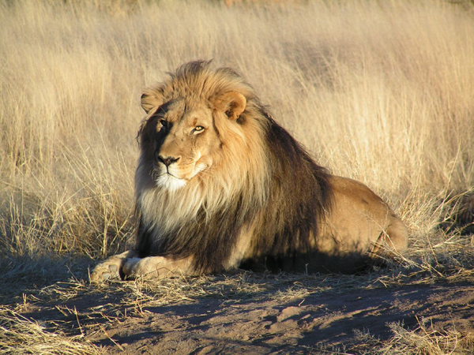

Panthera est un genre de lafamille des félins (Felidae) qui comporte cinq espèces vivantes connues: le léopard (ou panthère), le lion, le tigre, la panthère des neiges et le jaguar.
Le genre Panthera a été défini par Oken en 1816 ; il est classé dans les Pantherinés (Pantherinae), sous-famille appelée autrement « grands félins » ou « gros chats ».
Les quatre espèces actuelles du genre sont caractérisées par leurs aptitudes à rugir. On a longtemps attribué cette faculté à une ossification incomplète de l'os hyoïde. Cependant, de nouvelles études montrent que le rugissement est due à d'autres caractéristiques morphologiques, en particulier au larynx. Une cinquième espèce s'ajoute de plus en plus au genre Panthera: L'Once. Pourtant ce félin ne rugit pas, bien qu'il dispose d'une ossification incomplète de l'os hyoïde, il lui manque la morphologie particulière du larynx1.
Le léopard
Le léopard (Panthera pardus) ou panthère est une espèce de félins de la sous-famille des panthérinés. Ce félin présente un pelage fauve tacheté de rosettes ; une forme mélanique existe également. Excellent grimpeur et sauteur, le léopard a la particularité de hisser ses proies à la fourche d'un arbre pour les mettre à l'abri des autres prédateurs.
Félin solitaire et opportuniste, le léopard est largement distribué en Afrique et en Asie du Sud-Est sur de nombreux types d'habitats. La taille de la population est toutefois considérée comme en baisse par l'Union internationale pour la conservation de la nature, qui classe l'espèce comme quasi-menacée. Cinq sous-espèces sont considérées comme en danger ou en danger critique d'extinction : le léopard d'Arabie, le léopard de l'Amour, le léopard de Java, le léopard de Ceylan et le léopard de Perse.
Le lion

Le lion (Panthera leo) est un mammifère carnivore de la famille des félidés du genre Panthera (félins). Il est surnommé « le roi des animaux » car sa crinière lui donne un aspect semblable au Soleil, qui apparaît comme « le roi des astres ». Le mâle adulte, aisément reconnaissable à son importante crinière, accuse une masse moyenne qui peut être variable selon les zones géographiques où il se trouve, allant de 174,9 kg pour les lions de Kruger à 217 kg pour les lions de Transvaal. Certains spécimens très rares peuvent atteindre voire exceptionnellement dépasser 250 kg. Un mâle adulte se nourrit de 7 kg de viande chaque jour contre 5 kg chez la femelle. Le lion est un animal grégaire, c'est-à-dire qu'il vit en larges groupes familiaux, contrairement aux autres félins. Son espérance de vie, à l'état sauvage, est comprise entre 7 et 12 ans pour le mâle et 14 à 20 ans pour la femelle, mais il dépasse fréquemment les 30 ans en captivité.
La femelle du lion est la lionne, c'est elle qui va chasser, son petit est le lionceau. Le lion mâle ne chasse pas mais il est chargé de combattre les intrusions sur le territoire et les menaces contre la troupe. Le lion rugit. Il n'existe actuellement à l'état sauvage plus que 16 500 à 30 000 spécimens dans la savane africaine, répartis en une dizaine de sous-espèces1 et environ 300 au parc national de Gir Forest au nord-ouest de l'Inde2.
Le tigre
Le tigre (Panthera tigris) est un mammifère carnivore de la famille des félidés (Felidae) du genre Panthera. Aisément reconnaissable à sa fourrure rousse rayée de noir, il est le plus grand félin sauvage et l'un des plus grands carnivores du monde. L'espèce est divisée en neuf sous-espèces présentant des différences mineures de taille ou de comportement. Superprédateur, il chasse principalement les cerfs et les sangliers, bien qu'il puisse s'attaquer à des proies de taille plus importante comme les buffles. Jusqu'au XIXe siècle, le Tigre était réputé mangeur d'hommes. La structure sociale des tigres en fait un animal solitaire ; le mâle possède un territoire qui englobe les domaines de plusieurs femelles et ne participe pas à l'éducation des petits.
Leopard des neiges
L'once (Panthera uncia), aussi appelée irbis, panthère des neiges ou léopard des neiges est une espèce de félins des hautes montagnes. On la rencontre dans les vallées isolées des montagnes d'Asie centrale, de Sibérie centrale (dans la réserve naturelle de Saïano-Chouchensk) et de l'Altaï (notamment dans la réserve naturelle de Katoun), où elle monte jusqu'à 5 500 m. On l'appelle le « fantôme des montagnes ».
Auparavant cette espèce était classée dans le genre Uncia, dont elle était la seule représentante (espèce Uncia uncia). Elle fait à présent partie du genre Panthera.
Le jaguar
Le jaguar (Panthera onca) est un mammifère carnivore de la famille des félidés. C'est l'un des quatre « grands félins » du genre Panthera, avec le tigre, le lion et le léopard. Son aire de répartition actuelle s'étend du Mexique à la majeure partie de l'Amérique centrale et de l'Amérique du Sud, jusqu'au nord de l'Argentine et du Paraguay. Hormis des errances occasionnelles de spécimens originaires du Mexique, le jaguar est une espèce extirpée des États-Unis depuis le début des années 1970.